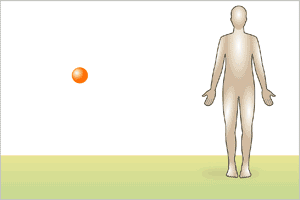

Contamination
If no animation seen, click here

- Contamination results when a radioisotope (as a gas, liquid, or solid) is released into the environment and then ingested, inhaled, or deposited on the body surface.
- How to diagnose:
- Scan with appropriate radiation detection meter
- Swab each nostril separately to help estimate level of internal (lung) contamination
- Obtain spot and/or 24 hour urine/stool sample for radioactivity
- Consider total body radiation survey with modified hospital nuclear medicine equipment
<< Home